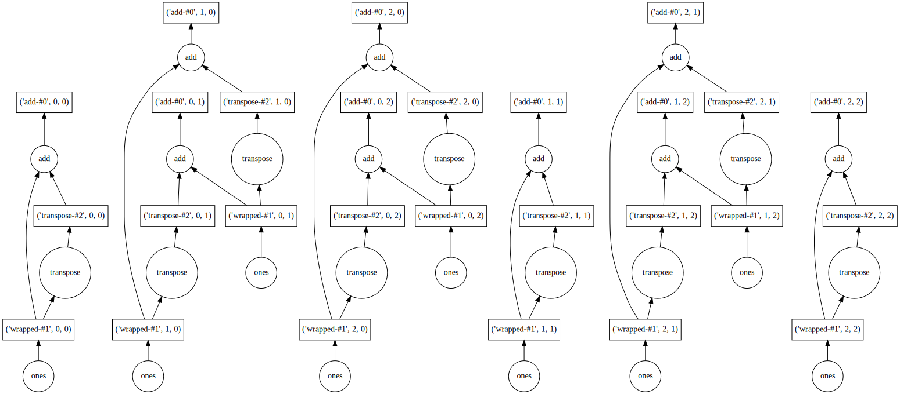

Parallelisation¶

import sys
IN_COLAB = 'google.colab' in sys.modules
if IN_COLAB:
%pip install dask[dataframe] joblib ray
What is it?¶
Parallelisation divides a large problem into many smaller ones and solves them simultaneously.
Divides up the time/space complexity across workers.
Tasks centrally managed by a scheduler.
Multi-processing (cores)
Useful for compute-bound problems.
Overcomes the Global Interpreter Lock, GIL (prevents running the bytecode on mutliple threads simutaneously).
Lower performance when need to exchange/aggregate data.
Suitable for text data and collections.
Multi-threading (parts of processes)
Useful for memory-bound problems.
Suitable for numeric data (e.g., NumPy).
Parallelised code often introduces overheads. So, the speed-up benefits are more pronounced with bigger jobs, rather than some of the small examples used in this tutorial.
Warning
Issues can arise from pinning processes to specific cores and oversubscribing threads. The following lines are recommended to be placed at the top of your job submission script.
# ensure processes not pinned
unset GOMP_CPU_AFFINITY
# ensure linear algebra libraries using 1 thread
# https://docs.dask.org/en/stable/array-best-practices.html#avoid-oversubscribing-threads
export OMP_NUM_THREADS=1
export MKL_NUM_THREADS=1
export OPENBLAS_NUM_THREADS=1
Parallelising a Python?¶
Python itself is not designed for massive scalability and controls threads preemptively using the GIL. This has lead many libraries to work around this using C/C++ backends.
Some options include:
multiprocessing for creating a pool of asynchronous workers.
from multiprocessing import Pool
def my_function(x):
return x * x
if __name__ == '__main__':
with Pool(3) as workers:
print(workers.map(my_function, [1, 2, 3]))
[1, 4, 9]
joblib for creating lightweight pipelines that help with “embaressingly parallel” tasks.
import joblib
import math
joblib.Parallel(n_jobs=1)(
joblib.delayed(math.sqrt)(i ** 2) for i in range(8)
)
[0.0, 1.0, 2.0, 3.0, 4.0, 5.0, 6.0, 7.0]
asyncio for concurrent programs, especially ones that are IO-bound.
import asyncio
async def main():
print('Hello ...')
await asyncio.sleep(1)
print('... World!')
asyncio.run(main())
These options work well for the CPU cores on your machine, though not really beyond that.
Dask¶
Dask has great features, helpful documentation, and a familiar API.
It works through creating and computing task graphs.
Task graphs have nodes (functions) and edges (objects).
For example, the task graph might be:
Embarrassingly parallel (apply one function to many pieces of data independently)
MapReduce (map a function to the data and reduce / summarise the output)

These task graphs are executed by a scheduler.
The resources used by this scheduler are managed by a cluster.
Note, this is separate to ARC’s scheduler.
There are two main types of Dask scheduler which can deploy jobs:
-
Cluster manager:
LocalCluster()Simpler.
For your laptop or a local server.
-
Cluster manager:
SGECluster(),SLURMCluster()More complex.
For a cluster on a high performance computer (e.g., SGE, SLURM), Kubernetes, or cloud.

Single machine¶
if not IN_COLAB:
from dask.distributed import Client, LocalCluster
cluster = LocalCluster()
client = Client(cluster)
client
If want multiple threads, then could use keyword arguments in Client instance:
client = Client(processes=False, threads_per_worker=4, n_workers=1)
Remember (important), always need to close down the client at the end:
client.close()
Applications¶
dask.array (NumPy)¶
import dask.array as da
my_array = da.random.random(
(5_000, 5_000),
chunks=(500, 500) # dask chunks
)
result = my_array + my_array.T
print(result)
if not IN_COLAB:
result.compute()
dask.array<add, shape=(5000, 5000), dtype=float64, chunksize=(500, 500), chunktype=numpy.ndarray>
dask.dataframe (Pandas)¶
Dask behind the scenes¶
Dask is under the hood for many libraries e.g. xarray, iris, scikit-learn.
import xarray as xr
ds = xr.tutorial.open_dataset(
'air_temperature',
chunks={'time': 'auto'} # dask chunks
)
ds_mean = ds.mean()
print(ds_mean) # a dask.array (an unexecuted task graph)
ds_mean.compute()
ds.close()
<xarray.Dataset>
Dimensions: ()
Data variables:
air float32 dask.array<chunksize=(), meta=np.ndarray>
if not IN_COLAB:
client.close()
Distributed¶
Dask-Jobqueue¶
Batch jobs (recommended)
Interactive jobs
Dask-Jobqueue is more for interactive work and the adaptive, dynamic scaling of workers.
from dask.distributed import Client
from dask_jobqueue import SGECluster
cluster = SGECluster(...)
client = Client(cluster)
Configuration files¶
Add ( / update) the
~/.config/dask/jobqueue.yamlfile.
jobqueue:
sge:
name: dask-worker
# Dask worker options
cores: 1 # Total number of cores per job
memory: '1 GB' # Total amount of memory per job
processes: 1 # Number of Python processes per job
interface: ib0 # Network interface to use like eth0 or ib0
death-timeout: 60 # Number of seconds to wait if a worker can not find a scheduler
local-directory: null # Location of fast local storage like /scratch or $TMPDIR
# SGE resource manager options
shebang: "#!/usr/bin/env bash"
queue: null
project: null
walltime: '01:00:00'
extra: []
env-extra: []
job-extra: []
log-directory: null
resource-spec: null
distributed:
worker:
memory:
target: false # dont spill to disk
spill: false # dont spill to disk
pause: 0.80 # pause memory execution at 80% use
terminate: 0.95 # restart the worker at 95% use
Examples¶
Create/edit the
example_dask_jobqueue_sge.pyfile.Submit to the queue using
qsub example_dask_jobqueue_sge.bash.If need to share memory across chunks:
Use shared memory (commonly OpenMP, Open Multi-Processing).
-pe smp npon ARC4
Otherwise:
Use message passing interface, MPI (commonly OpenMPI).
-pe ib npon ARC4
Dask-MPI¶
Uses the mpi4py package and MPI to distribute the workers (not communication).
Batch jobs (recommended)
Ensure that number of cores here match that in the requested resources at the top
Interactive jobs
Profiling and diagnostics¶
Many of the profiling tools we looked at earlier don’t work well with parallel code.
Visualise the task graph¶
Before executing the computation, you could visualise the task graph.
This can help find potential bottlenecks.
For example:
import dask.array as da
x = da.ones((15, 15), chunks=(5, 5))
y = x + x.T
y.visualize(filename='dask-transpose.svg')

Local diagnostics¶
For work on your laptop or local server.
Can use the
Profiler()for task execution.Each worker (rows on y-axis) has tasks (blocks) of different types (colours).
Time duration (x-axis).
ResourceProfiler()for resource use.Percentage CPU usage (left y-axis) and memory usage (right y-axis).
CacheProfiler()for scheduler cache.Cache size (y-axis) of different types (colours).
For example:
import dask.array as da
from dask.diagnostics import Profiler, ResourceProfiler, CacheProfiler, visualize
# Example linear algebra (QR decomposition) with Dask Array to demonstrate diagnostics.
# Taken from https://docs.dask.org/en/stable/diagnostics-local.html#example
random_array = da.random.random(size=(10_000, 1_000), chunks=(1_000, 1_000))
q, r = da.linalg.qr(random_array)
random_array_reconstructed = q.dot(r)
# the profilers are just context managers
# hence, can use many in a with block
with Profiler() as prof, ResourceProfiler(dt=0.25) as rprof, CacheProfiler() as cprof:
out = random_array_reconstructed.compute()
visualize([prof, rprof, cprof], save=True)
Returns local diagnostics that can viewed in the browser:
Each array creation runs concurrently.
Reduction step to combine the blocks (serial and held in cache).
Released from cache.
Parallel execution of
dotandsum.
Ray¶
Ray will automatically detect the available GPUs and CPUs on the machine.
Can also specify required resources.
First, initialise Ray.
import ray
ray.init()
{'node_ip_address': '10.1.1.19',
'raylet_ip_address': '10.1.1.19',
'redis_address': '10.1.1.19:6379',
'object_store_address': '/tmp/ray/session_2022-02-04_18-33-22_040652_3948/sockets/plasma_store',
'raylet_socket_name': '/tmp/ray/session_2022-02-04_18-33-22_040652_3948/sockets/raylet',
'webui_url': None,
'session_dir': '/tmp/ray/session_2022-02-04_18-33-22_040652_3948',
'metrics_export_port': 60667,
'node_id': '8aa322d2be01448a4e4fd96ab19641e43a3eec18388f325df1c4d476'}
Functions become Tasks¶
Parallelise functions by adding
@ray.remotedecoratorThen instead of calling it normally, use the
.remote()methodThis yields a future object reference that you can retrieve with
ray.get(object)
@ray.remote
def f(x):
return x * x
# asynchronously run a task
futures = [f.remote(i) for i in range(4)]
print(ray.get(futures))
[0, 1, 4, 9]
Classes become Actors¶
Parallelise classes the same way
These actors maintain their internal state
@ray.remote
class Counter(object):
def __init__(self):
self.value = 0
def increment(self):
self.value += 1
def read(self):
return self.value
(raylet) [2022-02-04 18:33:23,895 E 4054 4054] agent_manager.cc:134: Not all required Ray dependencies for the runtime_env feature were found. To install the required dependencies, please run `pip install 'ray[default]'`.
(raylet) [2022-02-04 18:33:23,895 E 4054 4054] worker_pool.cc:566: [Eagerly] Couldn't create a runtime environment for job 01000000.
# construct an actor instance using .remote()
counters = [Counter.remote() for i in range(4)]
# asynchronously run actor methods
[counter.increment.remote() for counter in counters]
futures = [counter.read.remote() for counter in counters]
print(ray.get(futures))
[1, 1, 1, 1]
Other key API methods:
ray.put()Put a value in the distributed object store.
put_id = ray.put(my_object)
ray.get()Get an object from the distributed object store, either placed there by
ray.put()explicitly or by a task or actor method, blocking until object is available.thing = ray.get(put_id)
ray.wait()Wait on a list of ids until one of the corresponding objects is available (e.g., the task completes). Return two lists, one with ids for the available objects and the other with ids for the still-running tasks or method calls.
finished, running = ray.wait([train_id, track_id])
Ray’s multiprocessing¶
To scale beyond one machine and generally manage a pool of processes.
Replace:
from multiprocessing.pool import Pool
With:
from ray.util.multiprocessing.pool import Pool
from ray.util.multiprocessing.pool import Pool
def my_function(x):
return x * x
with Pool(2) as workers:
print(workers.map(my_function, [1, 2, 3]))
[1, 4, 9]
Ray’s joblib¶
The underpinnings of scikit-learn, which Ray can scale to a cluster.
Import and instantiate register_ray, which registers Ray as a joblib backend for scikit-learn:
import joblib
from ray.util.joblib import register_ray
register_ray()
Then run your original scikit-learn code within a Ray/joblib backend:
with joblib.parallel_backend('ray'):
# original scikit-learn code
For example, here’s some parallel hyperparameter tuning:
import joblib
from ray.util.joblib import register_ray
register_ray()
import numpy as np
from sklearn.datasets import load_digits
from sklearn.svm import SVC
from sklearn.model_selection import RandomizedSearchCV
digits = load_digits()
param_space = {
'C': np.logspace(-6, 6, 30),
'gamma': np.logspace(-8, 8, 30),
'tol': np.logspace(-4, -1, 30),
'class_weight': [None, 'balanced'],
}
model = SVC(kernel='rbf')
search = sklearn.model_selection.RandomizedSearchCV(
model, param_space, cv=5, n_iter=300, verbose=10)
with joblib.parallel_backend('ray'):
search.fit(digits.data, digits.target)
When finished, remember to shut down the Ray connection.
ray.shutdown()
Please see this repository for examples of how to do distributed deep learning using Ray Train with TensorFlow, PyTorch, and Horovod.
Dask on Ray¶
Use Ray as a backend for Dask tasks.
Dask dispatches tasks to Ray for scheduling and execution.
import ray
import dask
import dask.dataframe as dd
import pandas as pd
import numpy as np
from ray.util.dask import ray_dask_get
dask.config.set(scheduler=ray_dask_get)
ray.init()
{'node_ip_address': '10.1.1.19',
'raylet_ip_address': '10.1.1.19',
'redis_address': '10.1.1.19:6379',
'object_store_address': '/tmp/ray/session_2022-02-04_18-33-26_044182_3948/sockets/plasma_store',
'raylet_socket_name': '/tmp/ray/session_2022-02-04_18-33-26_044182_3948/sockets/raylet',
'webui_url': None,
'session_dir': '/tmp/ray/session_2022-02-04_18-33-26_044182_3948',
'metrics_export_port': 50476,
'node_id': '3307fcaa3788cd8e5199007a361fb35d7c09ec33a2d076353ca6a8c2'}
df = pd.DataFrame(np.random.randint(0, 100, size=(2**10, 2**8)))
df = dd.from_pandas(df, npartitions=10)
df.head(10)
| 0 | 1 | 2 | 3 | 4 | 5 | 6 | 7 | 8 | 9 | ... | 246 | 247 | 248 | 249 | 250 | 251 | 252 | 253 | 254 | 255 | |
|---|---|---|---|---|---|---|---|---|---|---|---|---|---|---|---|---|---|---|---|---|---|
| 0 | 7 | 77 | 14 | 85 | 43 | 39 | 66 | 30 | 48 | 52 | ... | 32 | 89 | 87 | 51 | 9 | 42 | 15 | 88 | 80 | 81 |
| 1 | 23 | 14 | 51 | 1 | 86 | 55 | 20 | 78 | 73 | 23 | ... | 67 | 55 | 53 | 32 | 24 | 38 | 99 | 64 | 75 | 99 |
| 2 | 11 | 61 | 27 | 21 | 45 | 75 | 48 | 12 | 65 | 25 | ... | 14 | 89 | 37 | 93 | 70 | 98 | 85 | 12 | 60 | 3 |
| 3 | 1 | 31 | 37 | 51 | 71 | 90 | 99 | 93 | 11 | 25 | ... | 86 | 17 | 42 | 74 | 64 | 80 | 71 | 94 | 34 | 20 |
| 4 | 88 | 39 | 83 | 17 | 10 | 32 | 80 | 17 | 68 | 93 | ... | 77 | 7 | 77 | 28 | 39 | 30 | 41 | 97 | 1 | 49 |
| 5 | 64 | 4 | 1 | 64 | 16 | 55 | 6 | 91 | 59 | 50 | ... | 84 | 80 | 1 | 37 | 22 | 58 | 43 | 25 | 13 | 39 |
| 6 | 95 | 56 | 65 | 62 | 32 | 25 | 64 | 90 | 78 | 55 | ... | 66 | 19 | 66 | 35 | 62 | 47 | 28 | 11 | 27 | 54 |
| 7 | 28 | 42 | 71 | 78 | 99 | 7 | 23 | 41 | 44 | 84 | ... | 94 | 4 | 28 | 6 | 96 | 60 | 31 | 22 | 1 | 9 |
| 8 | 13 | 15 | 33 | 45 | 7 | 53 | 9 | 19 | 63 | 61 | ... | 2 | 8 | 43 | 37 | 87 | 55 | 68 | 2 | 90 | 45 |
| 9 | 20 | 19 | 25 | 35 | 32 | 88 | 27 | 33 | 17 | 27 | ... | 25 | 9 | 69 | 87 | 78 | 60 | 43 | 83 | 43 | 97 |
10 rows × 256 columns
ray.shutdown()
Exercise¶
…
Further information¶
Good practises¶
Start small.
Avoid very large chunks / partitions / task graphs (a good first option is to allow auto-chunking).
Only use parallelisation (e.g., Dask) when needed, then move back to normal Python ( / NumPy / Pandas).
Persist data in memory (RAM) where can, as faster than accessing from disk.
Load data with the parallel library (e.g., Dask), rather than just passing data to it to manage.
Call compute once, on lots of computations.
Avoid global state.
Don’t modify the data in place.
More information:
Dask, Dask Array, Dask DataFrame Dask Delayed
Other options¶
-
Swap out the library import and use the same API.
Uses Ray or Dask to easily speed up your Pandas code.
To use Modin, simply replace the import and use Pandas API as normal.
-
A tensor-based unified framework for large-scale data computation which scales numpy, pandas, scikit-learn and many other libraries.
Swap out the library import, use the same API, and add
.execute().Mars Tensor for NumPy.
Mars DataFrame for Pandas.
Mars can also use Ray as the backend (instructions).
-
Lightning-fast DataFrame library for Rust and Python.
-
Combines your Spark and Ray clusters, making it easy to do large scale data processing using the PySpark API and seemlessly use that data to train your models using TensorFlow and PyTorch.
Resources¶
Concurrency can also run different tasks together, but work is not done at the same time (concurrency from the ground up).
Asynchronous (multi-threading), useful for massive scaling, threads controlled explicitly.